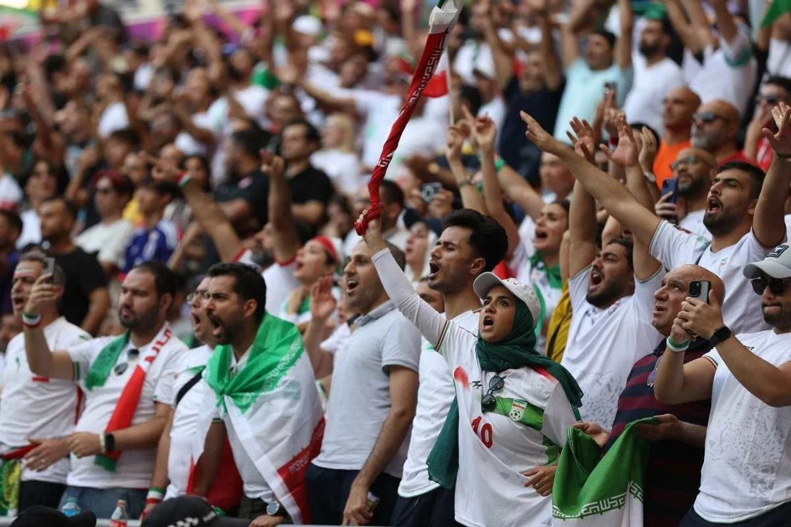
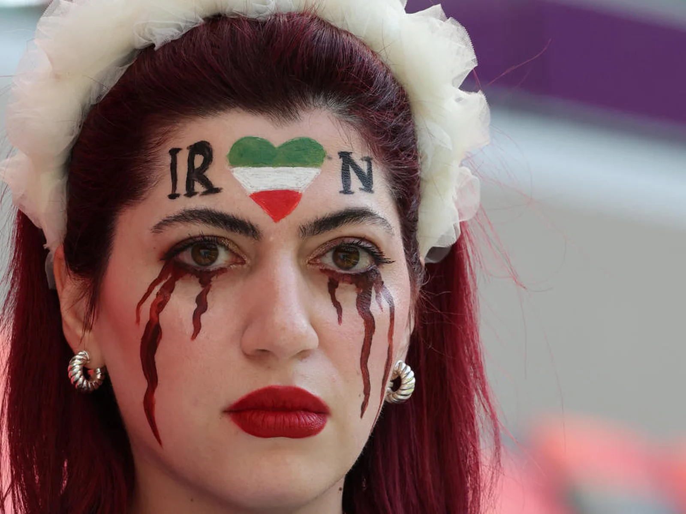

O Irã vai para a sua sétima Copa do Mundo em 2026, com retrospecto de 18 jogos: apenas 3 vitórias, 4 empates e 11 derrotas. A seleção nunca avançou além da fase de grupos em nenhuma participação. Sua participação em 2026 está cercada de incerteza: após os ataques ao país em 2026, a federação iraniana chegou a afirmar ser "improvável" a ida ao Mundial, com a FIFA monitorando a situação de perto.
Seleção
HISTÓRIA
A melhor Copa
do Mundo do
Irã
A campanha mais marcante ocorreu em 2018, quando a equipe ficou a apenas um ponto de avançar em um grupo fortíssimo com Espanha, Portugal e Marrocos. Após vencer os marroquinos na estreia, seguraram um empate heroico com Portugal e sonharam com a classificação até os minutos finais.
1998
A primeira vitória histórica do Irã em Copas veio contra os Estados Unidos — rivais geopolíticos desde a Revolução de 1979 — com placar de 2 a 1.
2022
Início com derrota pesada de 6 a 2 para a Inglaterra, mas reação com vitória de 2 a 0 sobre o País de Gales com gols nos acréscimos. A classificação ficou em aberto até a rodada final, quando foram eliminados pelos Estados Unidos.


Momentos inesquecíveis
01
Em 1998, o jogo contra os Estados Unidos é considerado um dos mais carregados politicamente da história das Copas, reunindo inimigos declarados em campo numa partida de enorme impacto simbólico.
02
Em 2022, dois gols de Mehdi Taremi contra a Inglaterra — um de oportunismo e um de pênalti — fazem dele o maior artilheiro iraniano na história das Copas.
03
Em 1978, na primeira participação, o Irã conseguiu um surpreendente empate com a Escócia graças a um gol nos minutos finais — curiosamente seu futuro adversário no Grupo G de 2026 é a Bélgica, mas a Escócia está no Grupo C
04
O Irã foi tricampeão asiático em 1968, 1972 e 1976 — feito que ainda é recordado como a era de ouro do futebol iraniano.
Detalhes
culturais do país